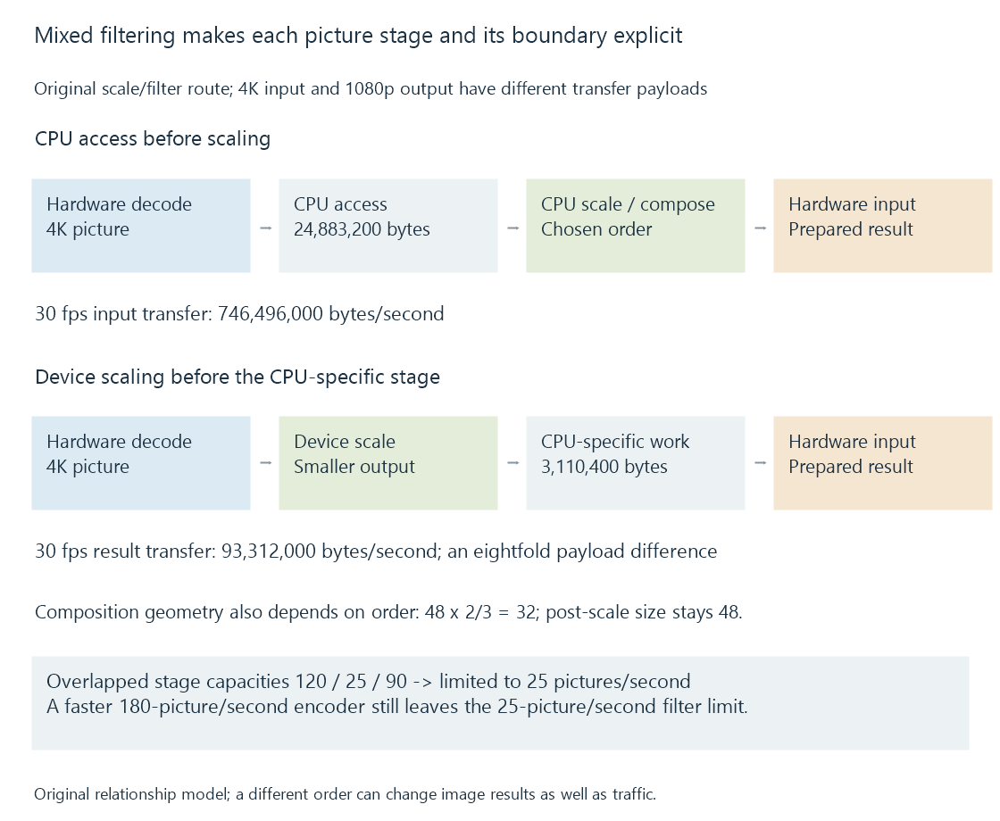

Mixed hardware and software filtering
A mixed video-processing route connects hardware and CPU operations through the picture representations each consumer accepts, with operation order and transfer placement affecting the result and cost.
A conversion can combine hardware decoding, CPU filtering, GPU processing and hardware encoding. Each stage needs a representation it can use, and the route must preserve the intended picture transformation.
“Hardware acceleration enabled” does not choose one universal arrangement for those filters.
Start from the selected operation
A source can need scaling, colour processing and subtitle composition. The selected application has implementations for those operations with particular input/output contracts.
A CPU-only renderer needs a CPU-usable picture. A device filter needs an accepted surface format/context. The result then needs to fit the next consumer.

Three original arrangements are:
| Route | Processing relationship |
|---|---|
| A | Hardware decode → device processing → hardware encode |
| B | Hardware decode → copy-back → CPU processing → hardware encode input |
| C | Hardware decode → device scale → CPU-specific operation → hardware encode input |
Each describes the chosen consumers, not a ranking that all sources and operations must share.
Stage location changes the transferred picture
Assume an ideal 4K 4:2:0 picture with sixteen-bit sample storage: 24,883,200 bytes.
If a compatible route scales and prepares a 1080p eight-bit picture before CPU access, that selected representation has 3,110,400 bytes. At thirty pictures per second, the modeled download payload changes from 746,496,000 to 93,312,000 bytes per second.
That is an eightfold payload difference for these declared representations. It omits driver padding and other operations.
The CPU operation must still accept the smaller representation and preserve the intended algorithm. Reducing data is useful only when it remains the right input.
Coordinates make the order visible
Use an original 1920 × 1080 source scaled to 1280 × 720, a ratio of two-thirds.
An overlay painted with height 48 source-coordinate units before scaling becomes 32 destination units. A 48-unit overlay painted after scaling remains 48 destination units:
Before scale: 48 × 2/3 = 32
After scale: 48
These are geometric models, not measured fonts. They show why moving an operation across another stage can change the visible result even when both routes run faster.
Colour processing likewise needs its intended value interpretation. A selected nonlinear-to-linear transformation and a tone-mapping operation cannot be replaced by arbitrary byte-format conversion.
Cross-stage completion protects the data
The device producer must finish the picture the CPU or another device reads. The CPU result must be available before another encoder consumes it.
The input and output allocations also remain live through codec references and outstanding consumers. A synchronization event and a resource's final release answer different questions.
Compatible shared storage can avoid a particular copy. An unsupported CPU filter can still require another representation despite successful hardware decoding and encoding.
The slow stage limits the filled route
An original independent-overlap model gives stage capacities of 120 pictures/s decode, 25 pictures/s filter and 90 pictures/s encode.
The filter limits the model to 25 pictures/s. Doubling the encoder to 180 does not change that minimum. Improving the filter to 60 moves the limit to 60, subject to the other stated assumptions.
A 30-fps target exceeds the original 25-picture/s producer model. Existing buffer reserve can cover a temporary deficit, but sustained production needs the complete route to keep up.
See Also
- Copy-back video pipelines
- Zero-copy video pipelines and the boundary being avoided
- Hardware frame surfaces and GPU contexts
- GPU compute and video processing
- Why hardware acceleration can still use the CPU
- Media filter graphs